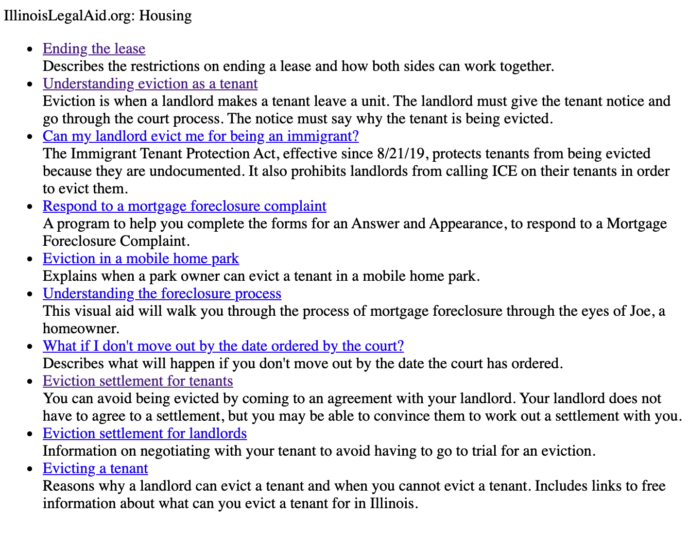

RSS Feeds¶
To use these feeds as is, copy the full code block and paste into your website. Or, you can access the raw RSS file and create your own version.
Sample output¶
Each feed shows 10 hand-curated pieces of legal information in the selected categories. The feeds were generated using feed2js.org.
Customizing the look and feel¶
The output is contained in a div with a class of rss-box. The feed title has a class of rss-title. Each item is a list element with a class of rss-item.
Websites can use standard CSS to customize these items. See Feed2JS’s Style information.
There is also a set of predefined styles that you can experiment with and copy and paste the CSS into your website.
Family content¶
Raw RSS feed: Family RSS
<script language="JavaScript" src="http://feed2js.org//feed2js.php?src=https%3A%2F%2Fwww.illinoislegalaid.org%2Flegal-information%2Ffamily.rss&chan=titlelinkno&desc=1&utf=y" charset="UTF-8" type="text/javascript"></script>
<noscript>
<a href="http://feed2js.org//feed2js.php?src=https%3A%2F%2Fwww.illinoislegalaid.org%2Flegal-information%2Ffamily.rss&chan=titlelinkno&desc=1&utf=y&html=n">View RSS feed</a>
</noscript>
Housing content¶
Raw RSS feed: Housing RSS
<script language="JavaScript" src="http://feed2js.org//feed2js.php?src=https%3A%2F%2Fwww.illinoislegalaid.org%2Flegal-information%2Fhousing.rss&chan=titlelinkno&desc=1&utf=y"
charset="UTF-8" type="text/javascript"></script>
<noscript>
<a href="http://feed2js.org//feed2js.php?src=https%3A%2F%2Fwww.illinoislegalaid.org%2Flegal-information%2Fhousing.rss&chan=titlelinkno&desc=1&utf=y&html=y">View RSS feed</a>
</noscript>
Safety¶
Raw RSS feed: Safety RSS
<script language="JavaScript" src="http://feed2js.org//feed2js.php?src=https%3A%2F%2Fwww.illinoislegalaid.org%2Flegal-information%2Fsafety.rss&chan=titlelinkno&desc=1&utf=y" charset="UTF-8" type="text/javascript"></script>
<noscript>
<a href="http://feed2js.org//feed2js.php?src=https%3A%2F%2Fwww.illinoislegalaid.org%2Flegal-information%2Fsafety.rss&chan=titlelinkno&desc=1&utf=y&html=y">View RSS feed</a>
</noscript>
Small Claims¶
Raw RSS feed: Small Claims RSS
<script language="JavaScript" src="http://feed2js.org//feed2js.php?src=https%3A%2F%2Fwww.illinoislegalaid.org%2Flegal-information%2Fsmallclaims.rss&chan=titlelinkno&desc=1&utf=y" charset="UTF-8" type="text/javascript"></script>
<noscript>
<a href="http://feed2js.org//feed2js.php?src=https%3A%2F%2Fwww.illinoislegalaid.org%2Flegal-information%2Fsmallclaims.rss&chan=titlelinkno&desc=1&utf=y&html=y">View RSS feed</a>
</noscript>
Traffic¶
Raw RSS feed: Traffic RSS
<script language="JavaScript" src="http://feed2js.org//feed2js.php?src=https%3A%2F%2Fwww.illinoislegalaid.org%2Flegal-information%2Ftraffic.rss&chan=titlelinkno&desc=1&utf=y" charset="UTF-8" type="text/javascript"></script>
<noscript>
<a href="http://feed2js.org//feed2js.php?src=https%3A%2F%2Fwww.illinoislegalaid.org%2Flegal-information%2Ftraffic.rss&chan=titlelinkno&desc=1&utf=y&html=y">View RSS feed</a>
</noscript>
For help, please contact support@illinoislegalaid.org.